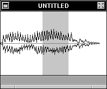

The Zero Line

Sound windows may overlay a Zero Line over any sound.
The Zero Line above is the gray horizontal line running through the sound.
To change or display the Zero Line, use the Marks Inspector: